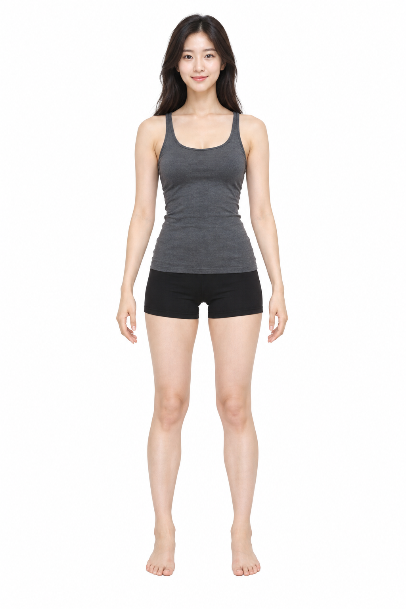

NEW ITEM ✦
옷 한 벌이 잘 보이는 사진을 골라줘. 상품 사진의 배경은 AI가 처리하므로 미리 지울 필요가 없어요.
MY LOOKS ♡
HOW TO PLAY ✦
start-tryon.command
127.0.0.1:4319
이 기능은 AI 가상 피팅 실험판이에요. 옷의 모양·리본·로고가 바뀔 수 있으므로 결과를 실제 핏으로 판단하지 마세요. 사진은 이 Mac의 로컬 서버에서 처리하며, 옷장과 결과는 사용 중인 브라우저에만 저장됩니다. 다른 기기에서는 AI 피팅과 동기화를 사용할 수 없어요.
REMOVE ITEM
사진을 이 기기의 옷장에서 삭제합니다. 기본 캐릭터 이미지는 삭제되지 않아요.
SAVE LOOK ♡
지금 캐릭터에 입힌 옷 조합을 저장해요.
NEW LOOK ✦
현재 입힌 옷을 모두 벗깁니다. 저장한 코디와 옷장 사진은 그대로 남아요.